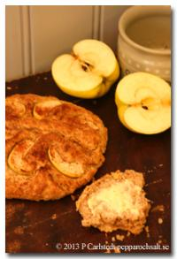

Scones med äppel och kanel

Äppelpaj i sconesformat? Inte riktigt, men minst lika gott! Och mer passande att äta till frukost.
Du behöver
- 75 g smör
- 240 g vetemjöl (4 dl)
- 60 g grahamsmjöl (1 dl)
- 40 g havregryn (1 dl)
- 1 msk bakpulver
- 1 tsk salt
- 1/2-2 tsk kanel
- 1 msk honung
- 2 dl grovrivet äpple
- 1 3/4 dl mjölk
- äppelklyftor och kanel till garnering